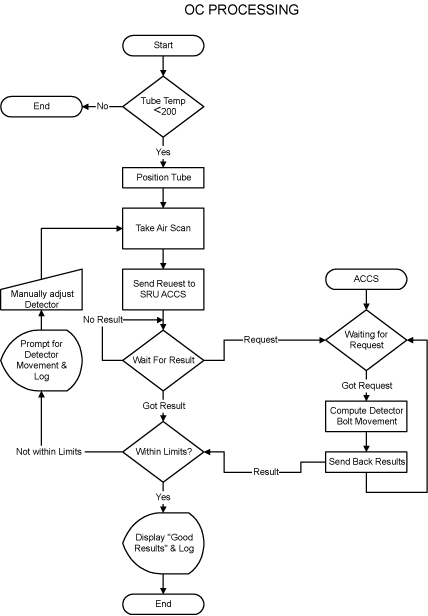
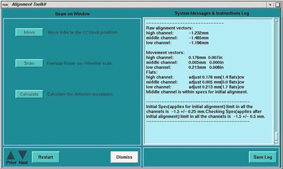
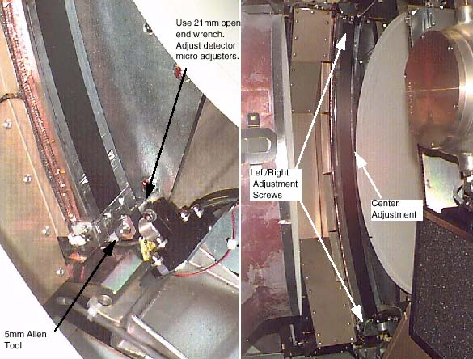

Proprietary to General Electric
Direction 5114043-800, Rev# 9
LightSpeed 3.X Service Methods (Advanced)
Proprietary to General Electric |
| Required Persons | Preliminary Reqs | Procedure | Finalization |
|---|---|---|---|
| 1 | Timing Not Applicable | Timing Not Applicable |
The objective of this procedure is to put the Detector in the correct position, assuming the tube is already in the correct position. This makes sure the X-ray Flux does not miss the Detector.
| NOTE: | Perform Tube Installation Certification, if necessary. Refer to SmarTube™ Setup |
| Last Revised: | 10 October 2007 |
Illustration 1: BOW Alignment Process Flow

| Follow ALL required safety and PPE procedures customary for your organization, when working on this product. | |
| Condition | Reference | Eff |
|---|---|---|
Only trained service personnel should service the GE CT Scanner. | - | - |
Perform the Tube Temperature Verification Procedure, to verify that the tube temperature is less than 200° C.
Wait 90 minutes if the new tube had more than 25 Kilo Joules of energy input, [KV x mA x Sec ÷ 1000] within the last 30 minutes prior to the start of system alignments. If a tube heat soak has been performed you must wait a minimum of 6 hours before system alignments can be performed.
Select [SERVICE DESKTOP] .
Select [REPLACEMENT]
Select [TUBE CHANGE]
Select [BOW ALIGNMENT]
Illustration 2: Screen Shot for Beam on Window Alignment

Select [MOVE] to send the tube to the 12 o’clock position.
Acquire a Beam on Window Scan.
Select [CALCULATE] and make adjustments as indicated by the program.
Remove the rear gantry cover if necessary.
Refer to Illustration 3. Loosen the cap-head screws, located at each end of the detector (total of two cap-head screws).
Illustration 3: Detector Cap-head Screws

| NOTE: | CW (clockwise) turns move the detector toward the mounting plate. CCW (counter-clockwise) turns move the detector away from the mounting plate. Right=Low Chnl, Center=Medium Chnl, Left=High Chnl. |
Loosen the middle nut (jam nut) with a 10mm wrench. Make adjustments as requested by software.
Acquire a Beam on Window Scan, then select [CALCULATE] .
If the adjustments pass the calculation, proceed to the next step, otherwise return to step 2.
Torque all three screws first to 50% of final torque value as shown in Table 1.
Table 1: Initial Torque Values
| 6.8 N-m | 5 lb-ft | 60 lb-in | 69.2 kg-cm |
After all screws have been seated using the initial torque setting, apply the final torque as shown in Table 2.
Table 2: Final Torque Values
| 13.6 N-m | 10 lb-ft | 120 lb-in | 138.5 kg-cm |
| NOTE: | The specs for BOW are checked by the software. If an adjustment is needed for the first BOW scan, make adjustments per procedure. In the verification scan, the spec is different than the software version because the tube is warm. The spec is -1.5 ± 0.5mm. |
No finalization required.